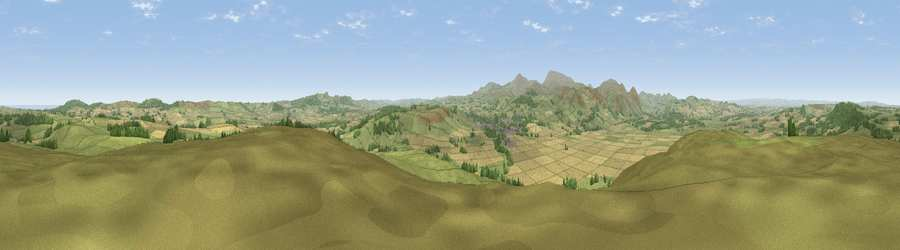

Viewpoint near Doddington
#2221 in England · top 12% of its area beats it · near DoddingtonWhere it is
The exact computed spot (NU 00688 31662). Click the marker for map links.
The view, rendered

A 360° render of this exact spot computed from the terrain model, tree cover and land cover — summer colours, afternoon light, calibrated against photographs of famous viewpoints. Real trees, hedges and buildings will differ in detail.
The panorama
Grey silhouette: terrain skyline in each direction (720 bearings, Earth curvature and refraction included). Dashed green: skyline with trees (+15 m) and buildings (+8 m) as obstacles. Blue strip: how far the ground is visible on each bearing.
Where the view opens
Wedge length = distance to the farthest visible ground on that bearing (vegetation-aware). Rings at 10, 25 and 50 km.
What fills the view
63% grassland · 26% cropland · 10% woodland ·
Angular shares of the visible panorama (visual magnitude), not map area. Landscape diversity 0.40 (0–1 Shannon).
Key numbers
More beautiful places nearby
The staircase of upgrades: each row has a higher view potential than everything closer. Driving times are estimates from straight-line distance, calibrated against real road routing — check an actual route before setting out.
| Place | Direction | Drive | Score |
|---|---|---|---|
| Viewpoint near Doddington | WNW · 0 km | ~1 min | 76.3 |
| Viewpoint near Doddington | NNW · 5 km | ~10 min | 80.3 |
| Humbleton Hill | SW · 5 km | ~11 min | 82.5 |
| Greensheen Hill | NE · 6 km | ~13 min | 87.5 |
| Viewpoint near Chillingham | SE · 10 km | ~19 min | 88.1 |
| Ullock Pike | SW · 128 km | ~152 min | 89.4 |
| Long Side | SW · 128 km | ~152 min | 89.5 |
| Viewpoint near Easington | SSE · 134 km | ~157 min | 90.2 |
55.57862, -1.99065 · source: screening · position refined by local search. Computed location — check access rights before visiting.